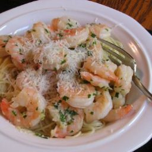

Shrimp Scampi

An amazing, buttery and delicious shrimp recipe.
Ingredients
- 1 pound Shrimp ; raw, peeled and deveined
- 2 tablespoon Butter
- 2 tablespoon olive oil
- 2 tablespoon Scallions ; sliced
- 2 cloves Garlic ; crushed
- 2 tablespoon Dry vermouth
- 2 tablespoon Cilantro ; fresh chopped
- 1/2 Lemon ; juice
Preparation
- Heat butter and olive oil in a large skillet.
- Add scallions, garlic, and shrimp. Saute until shrimp just turn pink.
- Add vermouth, cilantro, and lemon juice and heat through.
- Serve over angel hair pasta and top with freshly grated parmesan or romano cheese.
Home